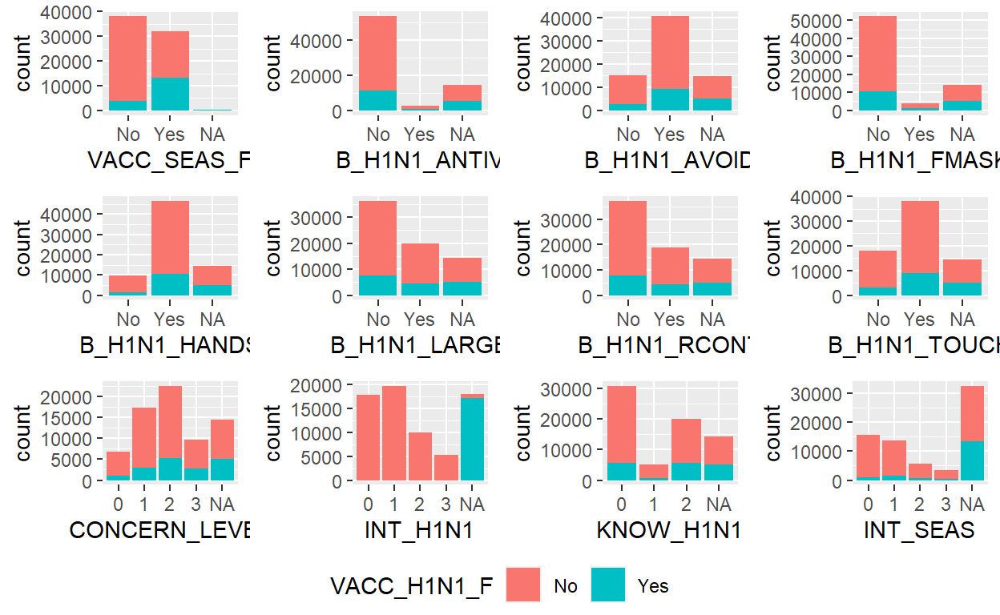
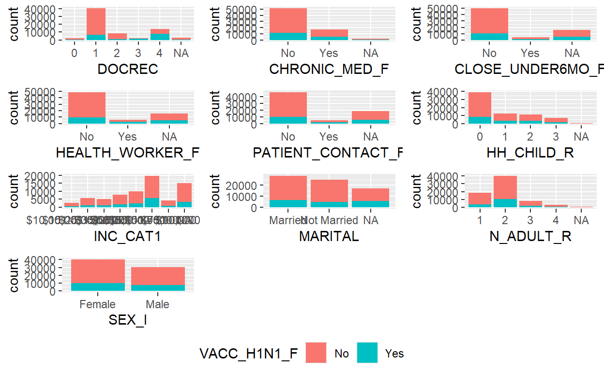
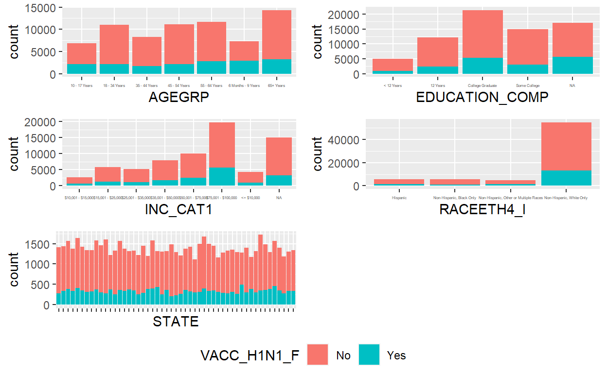
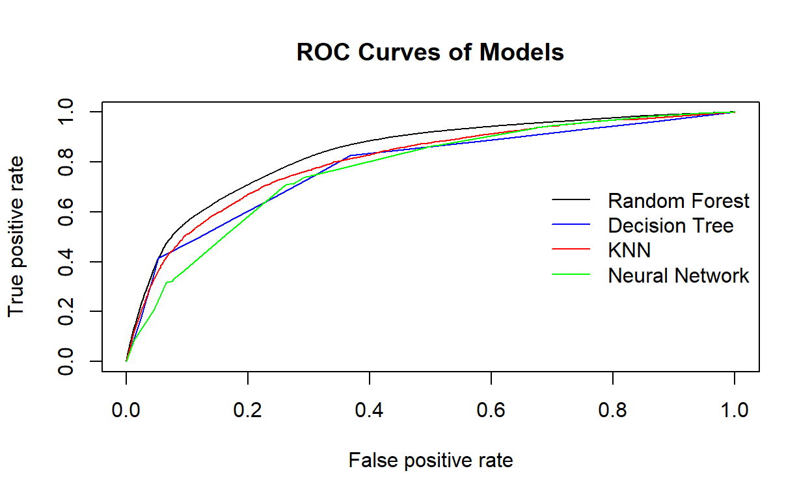
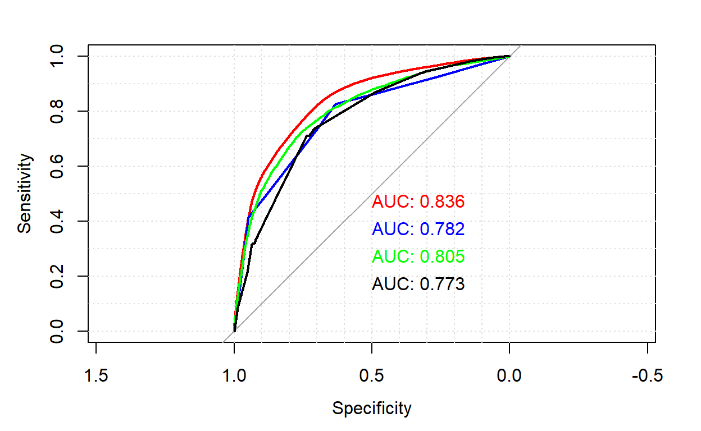
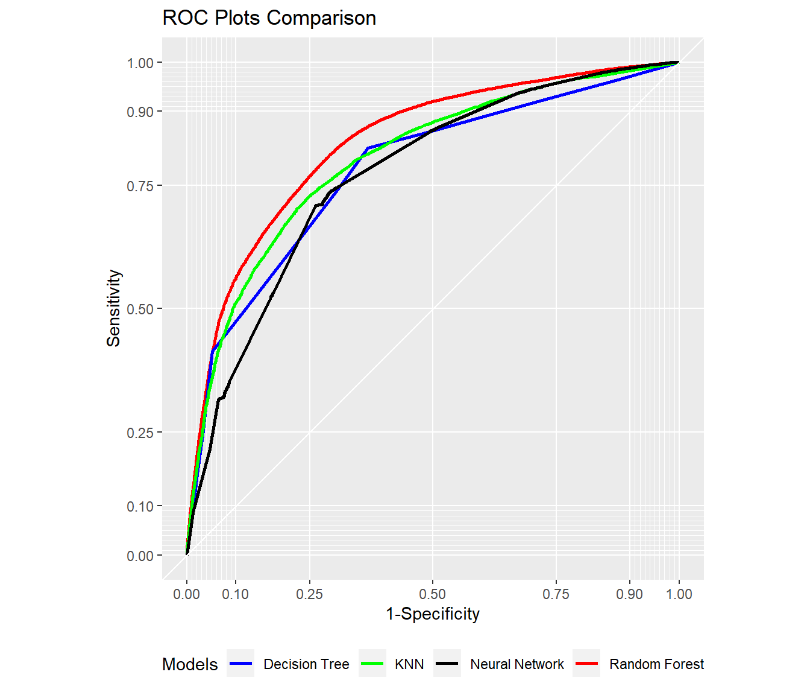
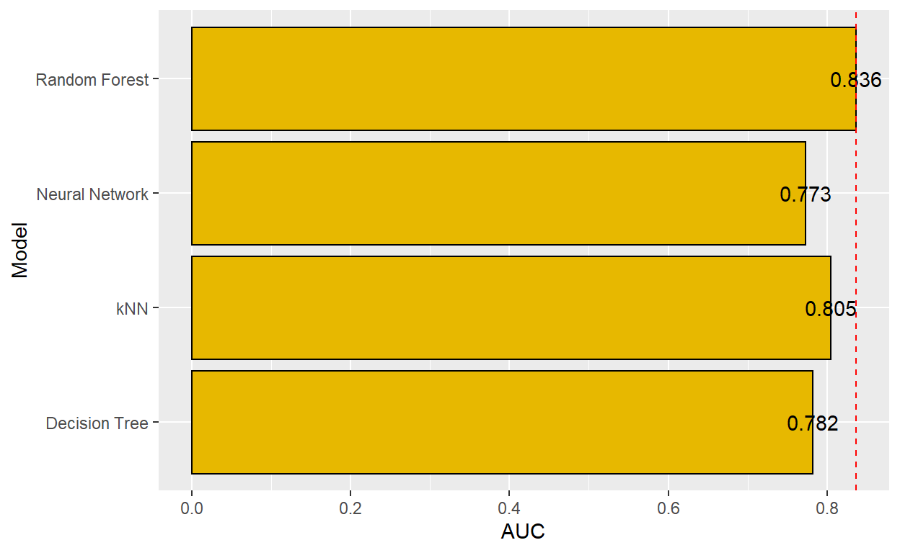
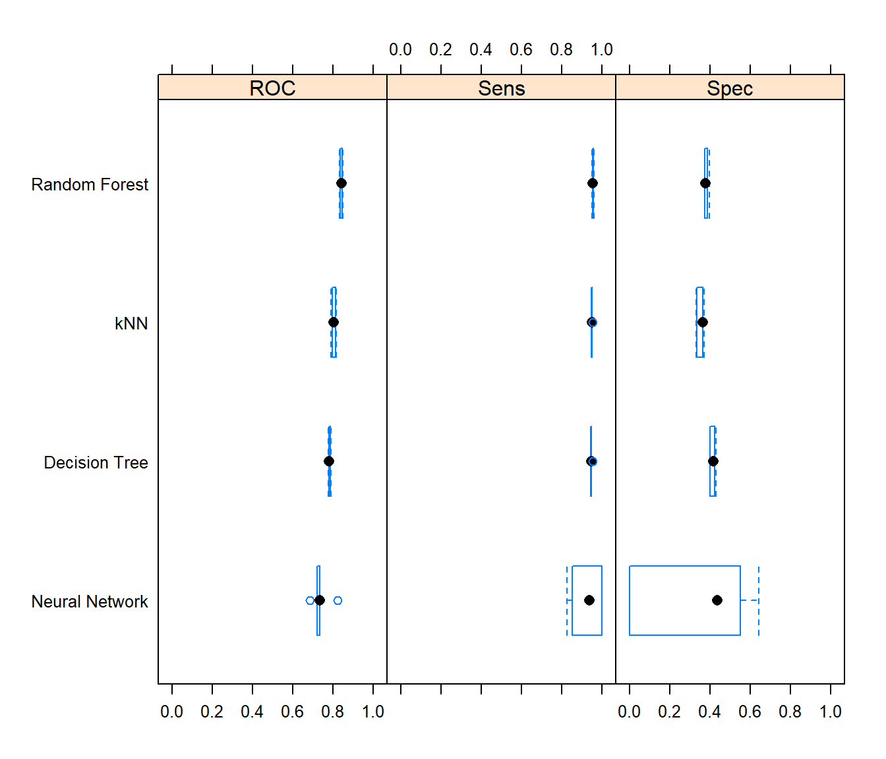

1. Introduction
With the ongoing COVID-19 pandemic, the world is experiencing first-hand on how a virus could affect economy, society and the deaths that it could cause. The importance of having a vaccine and having the general population taking the vaccine is key to curbing the spread of the virus and saving lives.
A similar situation was the H1N1 virus pandemic which occurred in 2009, where an estimated amount of 151,700-575,400 people worldwide had died during the first year of the virus. Being able to predict which individuals are likely to receive their H1N1 vaccinations, it will guide governments, health officials to know what are the important predictors that lead them to take the H1N1 vaccine. This understanding would be useful in future efforts to promote vaccination to the public, especially when a vaccine for the current pandemic is made.
1.1 Purpose
The purpose of the study is to develop various predictive models on the individuals who are likely to take the H1N1 vaccine based on the flu survey data , to be able to assess the models for the optimal model and visualize the assessment.
1.2 Literature Review
We looked at two shiny featuring model predictions to gain insight on what functions and features our predictive model app should include.
The first application was created by Vladislav Fridkin (Fridkin, n.d.) on interactive mushroom edibility predictions with XGboost model. The application uses XGBoost algorithm to predict if a mushroom is edible or poisonous. The user was given the flexibility to adjust 8 different parameters to obtain the best model. It showed visualizations on model accuracy and feature importance. The application was good with the customizabilty of the model parameters, however it seemed limited with by focusing only on one algorithm for modeling.
The second application predict payments on individual insurance claims using machine learning built by (Merlino, 2018). The application uses logistic regression and XGboost model to fit different parts of their models. The application does not allow any flexibility to their predictive model as there are no user inputs for the model.The user can only vary the confidence interval of the results.The visualization shown is the simulation results of claims.
Thus, after looking into the two applications, we find that to enhance the user experience and usefulness for predictive modeling application, the application must provide the user the flexibility to compare between different prediction algorithms and ability to tune those models. Visualization of the modeling results will be shown to allow the user to relate the parameters he had used to the model performance.
2. Data Preparation
The data used was obtained from the United States Centre of Disease Control and Prevention (CDC)’s website https://www.cdc.gov/nchs/nis/data_files_h1n1.htm on the National 2009 H1N1 flu survey conducted in the US.
2.1 Data Source
The dataset in excel format was imported by read_csv into the RStudio environment. The following code was used to launch the mentioned packages in R.
#R packages used to modelling and visualization
packages = c('tidyverse','readr','caret','caTools','ggpubr','ROCR','pROC','plotROC','plotly')
for (p in packages){
if(!require(p, character.only = T)){
install.packages(p)
}
library(p,character.only= T )
}
H1N1 <- read_csv('data/H1N1_Final_dan_edit.csv')
glimpse(H1N1)
Check for missing data i.e NA is conducted on the data. Variables with missing data were noted down.
VACC_H1N1_F VACC_SEAS_F B_H1N1_ANTIV
0.005694632 0.005652346 0.203865020
B_H1N1_AVOID B_H1N1_FMASK B_H1N1_HANDS
0.207910465 0.201976207 0.202765562
B_H1N1_LARGE B_H1N1_RCONT B_H1N1_TOUCH
0.203794542 0.203963690 0.205373252
CONCERN LEVEL HQ23 HQ24
0.000000000 0.854434484 0.962717073
HQ24_B INT_H1N1 INT_NEXT
0.994587280 0.000000000 0.000000000
INT_SEAS KNOW_H1N1 Q23
0.000000000 0.000000000 0.960165765
Q24 Q24_B DOCREC
0.977136897 0.996447903 0.000000000
ILI_DIAG_H1N1_F ILI_DIAG_SEAS_F ILI_F
0.961913622 0.961913622 0.020889716
ILI_OTHER_F ILI_TREAT_F PSL_1
0.017083897 0.922488160 1.000000000
PSL_2 Q9 Q9_NUM
1.000000000 1.000000000 1.000000000
CHRONIC_MED_F CLOSE_UNDER6MO_F HEALTH_WORKER_F
0.031799729 0.226291159 0.225713239
PATIENT_CONTACT_F AGEGRP EDUCATION_COMP
0.265195083 0.000000000 0.244009359
HH_CHILD_R HISP_I INC_CAT1
0.007132386 0.000000000 0.214436739
INSURE MARITAL N_ADULT_R
1.000000000 0.244544993 0.007132386
N_PEOPLE_R Q95 Q95_INDSTR
0.003157420 0.994432228 0.595554240
Q95_OCCPN RACEETH4_I RENT_OWN_R
0.595554240 0.000000000 0.983451737
SEX_I STATE REAS_NOH1N1_AHAD_F
0.000000000 0.000000000 0.399484100
REAS_NOH1N1_ALLG_F REAS_NOH1N1_CANT_F REAS_NOH1N1_COST_F
0.399484100 0.399484100 0.399484100
REAS_NOH1N1_DKNW_F REAS_NOH1N1_DWRK_F REAS_NOH1N1_GOTO_F
0.399484100 0.399484100 0.399484100
REAS_NOH1N1_NDOC_F REAS_NOH1N1_NEVR_F REAS_NOH1N1_NNDD_F
0.399484100 0.399484100 0.399484100
REAS_NOH1N1_NOTA_F REAS_NOH1N1_OTHR_F REAS_NOH1N1_REFD_F
0.399484100 0.399484100 0.399484100
REAS_NOH1N1_SAVE_F REAS_NOH1N1_SEFF_F REAS_NOH1N1_TIME_F
0.399484100 0.399484100 0.399484100 2.2 Date Wrangling and Cleaning
Before the dataset can be used for modelling, the missing data would need to processed.
The following section focused on wrangling the data set and cleaning up missing variables. The code below is used to remove the missing data from the target variable, VACC_H1N1_F.
H1N1[H1N1 == '#N/A'] <- NA # Changing all the value with "#N/A" to actual missing value.
VACC_H1N1_F VACC_SEAS_F B_H1N1_ANTIV
0.000000000 0.003997732 0.203132974
B_H1N1_AVOID B_H1N1_FMASK B_H1N1_HANDS
0.207201588 0.201360930 0.202098100
B_H1N1_LARGE B_H1N1_RCONT B_H1N1_TOUCH
0.203189680 0.203274738 0.204678197
CONCERN_LEVEL HQ23 HQ24
0.203473207 0.854834137 0.963198185
HQ24_B INT_H1N1 INT_NEXT
0.994740573 0.255146016 0.692755883
INT_SEAS KNOW_H1N1 Q23
0.459625744 0.204479728 0.960518855
Q24 Q24_B DOCREC
0.977417068 0.996597675 0.044031755
ILI_DIAG_H1N1_F ILI_DIAG_SEAS_F ILI_F
0.961993195 0.961993195 0.020484831
ILI_OTHER_F ILI_TREAT_F PSL_1
0.016869861 0.922497874 1.000000000
PSL_2 Q9 Q9_NUM
1.000000000 1.000000000 1.000000000
CHRONIC_MED_F CLOSE_UNDER6MO_F HEALTH_WORKER_F
0.031216331 0.225333144 0.224766090
PATIENT_CONTACT_F AGEGRP EDUCATION_COMP
0.264346470 0.000000000 0.242968528
HH_CHILD_R HISP_I INC_CAT1
0.007074001 0.000000000 0.213198185
INSURE MARITAL N_ADULT_R
1.000000000 0.243592288 0.007074001
N_PEOPLE_R Q95 Q95_INDSTR
0.003118798 0.994527927 0.594074284
Q95_OCCPN RACEETH4_I RENT_OWN_R
0.594074284 0.000000000 0.983612135
SEX_I STATE REAS_NOH1N1_AHAD_F
0.000000000 0.000000000 0.401020697
REAS_NOH1N1_ALLG_F REAS_NOH1N1_CANT_F REAS_NOH1N1_COST_F
0.401020697 0.401020697 0.401020697
REAS_NOH1N1_DKNW_F REAS_NOH1N1_DWRK_F REAS_NOH1N1_GOTO_F
0.401020697 0.401020697 0.401020697
REAS_NOH1N1_NDOC_F REAS_NOH1N1_NEVR_F REAS_NOH1N1_NNDD_F
0.401020697 0.401020697 0.401020697
REAS_NOH1N1_NOTA_F REAS_NOH1N1_OTHR_F REAS_NOH1N1_REFD_F
0.401020697 0.401020697 0.401020697
REAS_NOH1N1_SAVE_F REAS_NOH1N1_SEFF_F REAS_NOH1N1_TIME_F
0.401020697 0.401020697 0.401020697 Data will more than 50% of missing values are removed. 27 variables are wrangled into a new data set h1n1data.
h1n1data <-H1N1 %>%
select(VACC_H1N1_F,
VACC_SEAS_F,
B_H1N1_ANTIV,
B_H1N1_AVOID,
B_H1N1_FMASK,
B_H1N1_HANDS,
B_H1N1_LARGE,
B_H1N1_RCONT,
B_H1N1_TOUCH,
CONCERN_LEVEL,
INT_H1N1,
KNOW_H1N1,
INT_SEAS,
DOCREC,
CHRONIC_MED_F,
CLOSE_UNDER6MO_F,
HEALTH_WORKER_F,
PATIENT_CONTACT_F,
AGEGRP,
EDUCATION_COMP,
HH_CHILD_R,
INC_CAT1,
MARITAL,
RACEETH4_I,
N_ADULT_R,
SEX_I,
STATE)
The column variables are transformed in factor(categorical) variables.
h1n1data <- transform(h1n1data,
VACC_H1N1_F= as.factor(VACC_H1N1_F),
VACC_SEAS_F= as.factor(VACC_SEAS_F),
B_H1N1_ANTIV= as.factor(B_H1N1_ANTIV),
B_H1N1_AVOID= as.factor(B_H1N1_AVOID),
B_H1N1_FMASK= as.factor(B_H1N1_FMASK),
B_H1N1_HANDS= as.factor(B_H1N1_HANDS),
B_H1N1_LARGE= as.factor(B_H1N1_LARGE),
B_H1N1_RCONT= as.factor(B_H1N1_RCONT),
B_H1N1_TOUCH= as.factor(B_H1N1_TOUCH),
CONCERN_LEVEL= as.factor(CONCERN_LEVEL),
INT_H1N1= as.factor(INT_H1N1),
KNOW_H1N1= as.factor(KNOW_H1N1),
DOCREC= as.factor(DOCREC),
CHRONIC_MED_F= as.factor(CHRONIC_MED_F),
CLOSE_UNDER6MO_F= as.factor(CLOSE_UNDER6MO_F),
HEALTH_WORKER_F= as.factor(HEALTH_WORKER_F),
AGEGRP= as.factor(AGEGRP),
EDUCATION_COMP= as.factor(EDUCATION_COMP),
HH_CHILD_R= as.factor(HH_CHILD_R),
INC_CAT1= as.factor(INC_CAT1),
MARITAL= as.factor(MARITAL),
RACEETH4_I= as.factor(RACEETH4_I),
N_ADULT_R= as.factor(N_ADULT_R),
SEX_I= as.factor(SEX_I),
STATE= as.factor(STATE),
PATIENT_CONTACT_F = as.factor(PATIENT_CONTACT_F),
INT_SEAS = as.factor(INT_SEAS)
)
The code below added a column which recoded the various states into regions.
region <- read_csv("data/state_region.csv")
h1n1data$state_recoded <- str_to_title(h1n1data$STATE)
h1n1data <- left_join(h1n1data, region,
by=c("state_recoded" = "State"))
summary(h1n1data)
VACC_H1N1_F VACC_SEAS_F B_H1N1_ANTIV B_H1N1_AVOID B_H1N1_FMASK
No :53471 No :38210 No :53438 No :15263 No :52444
Yes:17069 Yes :32048 Yes : 2773 Yes :40661 Yes : 3892
NA's: 282 NA's:14329 NA's:14616 NA's:14204
B_H1N1_HANDS B_H1N1_LARGE B_H1N1_RCONT B_H1N1_TOUCH CONCERN_LEVEL
No : 9813 No :36252 No :37220 No :17939 0 : 6861
Yes :46471 Yes :19955 Yes :18981 Yes :38163 1 :17218
NA's:14256 NA's:14333 NA's:14339 NA's:14438 2 :22490
3 : 9618
NA's:14353
INT_H1N1 KNOW_H1N1 INT_SEAS DOCREC CHRONIC_MED_F
0 :17731 0 :30895 0 :15490 0 : 1948 No :51265
1 :19663 1 : 5251 1 :13543 1 :40462 Yes :17073
2 : 9961 2 :19970 2 : 5670 2 : 8687 NA's: 2202
3 : 5187 NA's:14424 3 : 3415 3 : 2534
NA's:17998 NA's:32422 4 :13803
NA's: 3106
CLOSE_UNDER6MO_F HEALTH_WORKER_F PATIENT_CONTACT_F
No :50032 No :48599 No :46951
Yes : 4613 Yes : 6086 Yes : 4942
NA's:15895 NA's:15855 NA's:18647
AGEGRP EDUCATION_COMP HH_CHILD_R
10 - 17 Years : 6833 < 12 Years : 4995 0 :39356
18 - 34 Years :11037 12 Years :12158 1 :12383
35 - 44 Years : 8243 College Graduate:21376 2 :11333
45 - 54 Years :11071 Some College :14872 3 : 6969
55 - 64 Years :11685 NA's :17139 NA's: 499
6 Months - 9 Years: 7332
65+ Years :14339
INC_CAT1 MARITAL
$75,001 - $100,000:19781 Married :28539
$50,001 - $75,000 : 9985 Not Married:24818
$35,001 - $50,000 : 7976 NA's :17183
$15,001 - $25,000 : 5805
$25,001 - $35,000 : 5134
(Other) : 6820
NA's :15039
RACEETH4_I N_ADULT_R
Hispanic : 5469 1 :18654
Non-Hispanic, Black Only : 5776 2 :40293
Non-Hispanic, Other or Multiple Races: 4626 3 : 7996
Non-Hispanic, White Only :54669 4 : 3098
NA's: 499
SEX_I STATE state_recoded
Female:40314 TEXAS : 1720 Length:70540
Male :30226 NEW MEXICO : 1678 Class :character
CALIFORNIA : 1637 Mode :character
GEORGIA : 1605
MARYLAND : 1584
DISTRICT OF COLUMBIA: 1581
(Other) :60735
Region
Length:70540
Class :character
Mode :character
The predictors are plotted against the target variable to check for complete or quasi-complete separation.



The new dataframe h1n1model is created. 3 variables with complete/quasi-complete separation were removed.
h1n1model <- h1n1data #new dataframe for predictive modeling
h1n1model <-select(h1n1model,-c(INT_H1N1,B_H1N1_ANTIV,INT_SEAS, state_recoded, Region)) #Remove variable with complete separation from dataset.
h1n1model <- h1n1model %>% #Omitting na in order as some models unable to process with missing values.
na.omit
summary(h1n1model) #To check the data again.
VACC_H1N1_F VACC_SEAS_F B_H1N1_AVOID B_H1N1_FMASK B_H1N1_HANDS
No :30432 No :20780 No :10338 No :36863 No : 6618
Yes: 9075 Yes:18727 Yes:29169 Yes: 2644 Yes:32889
B_H1N1_LARGE B_H1N1_RCONT B_H1N1_TOUCH CONCERN_LEVEL KNOW_H1N1
No :25744 No :26430 No :12467 0: 4486 0:21859
Yes:13763 Yes:13077 Yes:27040 1:12541 1: 2903
2:16183 2:14745
3: 6297
DOCREC CHRONIC_MED_F CLOSE_UNDER6MO_F HEALTH_WORKER_F
0: 917 No :28467 No :36077 No :34785
1:24438 Yes:11040 Yes: 3430 Yes: 4722
2: 5363
3: 1271
4: 7518
PATIENT_CONTACT_F AGEGRP EDUCATION_COMP
No :35658 10 - 17 Years : 0 < 12 Years : 3300
Yes: 3849 18 - 34 Years :8122 12 Years : 8593
35 - 44 Years :6220 College Graduate:16515
45 - 54 Years :8283 Some College :11099
55 - 64 Years :8367
6 Months - 9 Years: 0
65+ Years :8515
HH_CHILD_R INC_CAT1 MARITAL
0:27196 $10,001 - $15,000 : 1979 Married :21477
1: 4939 $15,001 - $25,000 : 4335 Not Married:18030
2: 4570 $25,001 - $35,000 : 3826
3: 2802 $35,001 - $50,000 : 5879
$50,001 - $75,000 : 7082
$75,001 - $100,000:13303
<= $10,000 : 3103
RACEETH4_I N_ADULT_R
Hispanic : 2581 1:11389
Non-Hispanic, Black Only : 3083 2:22005
Non-Hispanic, Other or Multiple Races: 2274 3: 4399
Non-Hispanic, White Only :31569 4: 1714
SEX_I STATE
Female:23154 NEW MEXICO : 964
Male :16353 DISTRICT OF COLUMBIA: 926
TEXAS : 926
CALIFORNIA : 896
ARIZONA : 878
VIRGINIA : 863
(Other) :34054 3 Modeling
3.1 Choosing the right Modeling Package
The R caret package is a set of functions that streamlines the process for predictive model building. It’s current release consist 238 models.As different modeling functions has different syntax for modeling training and prediction, it will be difficult to keep track of which algorithms are in which package. For example, a random forest model will be using randomforest() syntax to run the model and a neural network model requires the neuralnet() syntax. Moreover, each of the algorithm will have their own arguments, making it difficult and time-consuming if different models are required to be used in the same code.
There is no need to call for the library for the different modeling packages using caret. caret will assist to load the required packages when used and if the package is missing, there will be a prompt for installation.
The train() function in caret has multiple functions:
- Building a model using a specific algorithm
- Cross validating the model
- Tune the parameters for optimal model performance
- Choose the optimal model based on a given evaluation metric
- Preprocessing
The caret package made it easier by combining the data pre-processing, model hyperparameter tuning within the same package. It allows quick change of model with minor syntax change, allowing it the most suitable model to be found.
3.2 Data Splitting
As the H1N1 vaccination (VACC_H1N1_F) is the target variable is important for analysis, a balance of the target variable across the training/test sets, the function createDataPartition was used to create training/testing sets using stratified random sampling.
Data is split with 80% as training data and 20% are testing data.In place of partitioning a validation dataset, the traincontrol function is used for the cross-validation of the training data set.
The below code shows the spliting of the dataset.
set.seed(123)
# define an 80%/20% train/test split of the h1n1model data set
split=0.80
trainIndex <- createDataPartition(h1n1model$VACC_H1N1_F, p=split, list=FALSE)
data_train <- h1n1model[ trainIndex,]
data_test <- h1n1model[-trainIndex,]
3.3 Model Tuning
The function trainControl generates parameters that further control how models are created, with different resampling methods like bootstrap re-sampling, k-fold cross validation. In the code below, the k-fold cross validation method with number = referring to the number of folds being used. The repeated k-fold cross validation method involves splitting the dataset into k-subsets and repeating in a number of time. For each subset is held out while the model is trained on all other subsets. This process is completed until accuracy is determine for each instance in the dataset, and an overall accuracy estimate is provided.
fitControl <- trainControl(
method = "cv",
number = 5,
classProbs = TRUE,
summaryFunction = twoClassSummary, #twoClassSummary computes the sensitivity, specificity and aread under the ROC curve.
savePredictions = TRUE)
There are two main ways of tuning the model within the caret package, using tuneLength or tuneGrid.
The tuneLength parameter allows the user to enter a value which will determine the number of default values being used as the main parameter for a specific model. The number used can be applicable throughout all the models. The tuneGrid function create a dataframe to store the tuning parameter grid specified by the user. It allows the user to determine which are the values a model will take as it’s main parameter. The parameters in the tuneGrid is model specific. Using tuneGrid will be more applicable as it provides the user more model customizability and fine tuning.
For random forest using the ranger method in caret, three options are available for tuning the model. Firstly, mtry which refers to the number of variables randomly sampled as candidates at each split. Split rule defines which splitting method is used. The default used is Gini where the split minimizes the the Gini impurtity for classification. The minimum node size refers to the minimum number of observations in a terminal node.
According the research (Probst et al.,2019), mtry has the most influence over the model performance and the best value of mtry depends on the number of variables that are related to the outcome.
# Random Forest:
set.seed(123)
m=4
ns=10
rf_grid <- expand.grid(
mtry = 2:m,
splitrule ="gini",
min.node.size = 10
)
model_rf <- train(VACC_H1N1_F~.,
data=data_train,
trControl = fitControl,
method = "ranger",
metric = "ROC",
importance = "impurity",
tuneGrid = rf_grid)
model_rf
Random Forest
31606 samples
23 predictor
2 classes: 'No', 'Yes'
No pre-processing
Resampling: Cross-Validated (5 fold)
Summary of sample sizes: 25285, 25285, 25284, 25285, 25285
Resampling results across tuning parameters:
mtry ROC Sens Spec
2 0.8335559 0.9952764 0.0738292
3 0.8390148 0.9692352 0.2856749
4 0.8417187 0.9558860 0.3809917
Tuning parameter 'splitrule' was held constant at a value of
gini
Tuning parameter 'min.node.size' was held constant at a
value of 10
ROC was used to select the optimal model using the largest value.
The final values used for the model were mtry = 4, splitrule =
gini and min.node.size = 10.The rpart2 method within the caret package allows for the tuning for the maximum depth of the tree. This tuning variable can help to limit the decsion tree model from growing too deep which might cause over-fitting.
#Decision Tree
set.seed(123)
depth = 5 #User-defined maximum depth of decision tree
dt_grid<- expand.grid(maxdepth = depth)
model_dt <- train(VACC_H1N1_F~.,
data=data_train,
trControl = fitControl,
method = "rpart2",
metric = "ROC",
tuneGrid = dt_grid
)
model_dt
CART
31606 samples
23 predictor
2 classes: 'No', 'Yes'
No pre-processing
Resampling: Cross-Validated (5 fold)
Summary of sample sizes: 25285, 25285, 25284, 25285, 25285
Resampling results:
ROC Sens Spec
0.7841742 0.9484104 0.4137741
Tuning parameter 'maxdepth' was held constant at a value of 5The principle behind K-Nearest Neighbor(KNN) algorithm is to find K predefined number of training samples that are closest in the distance to a new point & predict a label for our new point using these samples. For classification the KNN method starts by identifying the k most similar training observations (i.e. neighbors) to the new observation, and then assigns the observation to the class containing the majority of its neighbors.
The choice of k considerably impacts the output of KNN model. k = 1 corresponds to a highly flexible method resulting to a training error rate of 0 (over-fitting), but the test error rate may be quite high. The value of optimal k is usually the square root of N, where N is the total number of samples.
#K-Nearest Neighbors
set.seed(123)
kv=10 #User-defined k value
knn_grid <- expand.grid(k= kv)
model_knn <- train(VACC_H1N1_F~.,
data=data_train,
trControl = fitControl,
method = "knn",
metric = "ROC",
tuneGrid = knn_grid
)
model_knn
k-Nearest Neighbors
31606 samples
23 predictor
2 classes: 'No', 'Yes'
No pre-processing
Resampling: Cross-Validated (5 fold)
Summary of sample sizes: 25285, 25285, 25284, 25285, 25285
Resampling results:
ROC Sens Spec
0.8048322 0.9500945 0.3513774
Tuning parameter 'k' was held constant at a value of 10For the neural network(nnet) model,there are two tuning parameters, which need to be set. First is the number of nodes in the hidden layer and second, it is the value of the “weight decay” parameter.
The hidden layer of the neural network is the intermediate layer between the input and output layer of a neuron network (Panchal & Panchal, 2014, p. 460). The hidden nodes might cause overfitting when too many neurons(hidden nodes) are present in the network. The purpose of the weight decay factor is to prevent overfitting.
#Neural Network
set.seed(123)
sz = 1 #User-defined number of hidden nodes
dc = 0 #USer-defined decay rate
nnet_grid <- expand.grid( size = sz,
decay = dc)
model_nnet <- train(VACC_H1N1_F~.,
data=data_train,
trControl = fitControl,
method = "nnet",
metric = "ROC",
tuneGrid = nnet_grid
)
# weights: 99
initial value 26589.627274
iter 10 value 13626.461983
iter 20 value 13376.340522
iter 30 value 12915.052594
iter 40 value 12606.753114
iter 50 value 12331.349382
iter 60 value 11946.723445
iter 70 value 11776.270369
iter 80 value 11732.724596
iter 90 value 11718.627201
iter 100 value 11717.572046
final value 11717.572046
stopped after 100 iterations
# weights: 99
initial value 17171.750195
iter 10 value 11380.634022
iter 20 value 11309.563841
iter 30 value 11278.590198
iter 40 value 11264.527582
iter 50 value 11259.782750
iter 60 value 11256.844758
iter 70 value 11253.710980
iter 80 value 11241.607724
iter 90 value 11232.658714
iter 100 value 11232.389316
final value 11232.389316
stopped after 100 iterations
# weights: 99
initial value 19684.645375
iter 10 value 10712.335323
iter 20 value 10503.529519
iter 30 value 10471.490428
iter 40 value 10447.308989
iter 50 value 10426.685950
iter 60 value 10414.830002
iter 70 value 10410.289543
iter 80 value 10409.708839
final value 10409.698890
converged
# weights: 99
initial value 17241.041006
iter 10 value 13626.329956
iter 20 value 12536.157114
iter 30 value 11488.105019
iter 40 value 11293.383176
iter 50 value 11148.360692
iter 60 value 11045.260594
iter 70 value 10976.829467
iter 80 value 10943.918263
iter 90 value 10928.649520
iter 100 value 10914.121349
final value 10914.121349
stopped after 100 iterations
# weights: 99
initial value 16605.060349
iter 10 value 12063.508758
iter 20 value 11550.729798
iter 30 value 11528.194364
iter 40 value 11510.989549
iter 50 value 11503.611516
iter 60 value 11493.210692
iter 70 value 11487.004214
iter 80 value 11481.522394
iter 90 value 11473.852666
iter 100 value 11468.934232
final value 11468.934232
stopped after 100 iterations
# weights: 99
initial value 18646.728694
iter 10 value 14221.978222
iter 20 value 14022.646547
iter 30 value 13911.598167
iter 40 value 13319.594765
iter 50 value 12953.457998
iter 60 value 12841.826303
iter 70 value 12639.090264
iter 80 value 12554.912863
iter 90 value 12535.639135
iter 100 value 12531.439084
final value 12531.439084
stopped after 100 iterationsmodel_nnet
Neural Network
31606 samples
23 predictor
2 classes: 'No', 'Yes'
No pre-processing
Resampling: Cross-Validated (5 fold)
Summary of sample sizes: 25285, 25285, 25284, 25285, 25285
Resampling results:
ROC Sens Spec
0.7411793 0.9238097 0.3256198
Tuning parameter 'size' was held constant at a value of 1
Tuning parameter 'decay' was held constant at a value of 04. Plotting Variable Importance
Variable importance helps to identify most important variables that contribute most significantly to the target variable.Being able to select the most important predictor variables that explains the major part of variance of a target variable can help to identify and build high performing models.
The variable importance of each trained model is plotted.(Note:kNN does not have variable importance)
Variable Importance of Random Forest
rfImp <- varImp(model_rf)
dtImp <- varImp(model_dt)
nnetImp <- varImp(model_nnet)
No_Var=5 #No.of variable importance to be shown can be user-defined.
g1 <- rfImp$importance %>%
as.data.frame() %>%
rownames_to_column() %>%
arrange(Overall) %>%
mutate(rowname = forcats::fct_inorder(rowname )) %>%
top_n(No_Var,Overall) %>% #top 5 Importance
ggplot(aes(x = rowname, y = Overall))+
geom_col(color="black",fill = "light blue")+
coord_flip()+
xlab("Variable")+
ggtitle("Variable Importance of Random Forest Model") +
theme_minimal() +
theme(panel.background = element_rect(fill = "gray80", color = "gray80", size =0.5, linetype = "solid"),
panel.grid.major = element_line(size =0.5, linetype = "solid", color = "white"), #major refers to grid line at values
panel.grid.minor = element_line(size =0.25, linetype = "solid", color = "white")) # minor refers line in between grid values
ggplotly(g1, tooltip = c("rowname", "Overall"))
Variable Importance of Decision Tree
g2 <- dtImp$importance %>%
as.data.frame() %>%
rownames_to_column() %>%
arrange(Overall) %>%
mutate(rowname = forcats::fct_inorder(rowname )) %>%
top_n(No_Var,Overall) %>% #top 5 Importance
ggplot(aes(x = rowname, y = Overall))+
geom_col(color="black",fill = "light blue")+
coord_flip()+
xlab("Variable")+
ggtitle("Variable Importance of Decision Tree Model") +
theme_minimal() +
theme(panel.background = element_rect(fill = "gray80", color = "gray80", size =0.5, linetype = "solid"),
panel.grid.major = element_line(size =0.5, linetype = "solid", color = "white"), #major refers to grid line at values
panel.grid.minor = element_line(size =0.25, linetype = "solid", color = "white")) # minor refers line in between grid values
ggplotly(g2, tooltip = c("rowname", "Overall"))
Variable Importance of Neural Network
g3 <- nnetImp$importance %>%
as.data.frame() %>%
rownames_to_column() %>%
arrange(Overall) %>%
mutate(rowname = forcats::fct_inorder(rowname )) %>%
top_n(No_Var,Overall) %>% #top 5 Importance
ggplot(aes(x = rowname, y = Overall))+
geom_col(color="black",fill = "light blue")+
coord_flip()+
xlab("Variable")+
ggtitle("Variable Importance of Neural Network Model") +
theme_minimal() +
theme(panel.background = element_rect(fill = "gray80", color = "gray80", size =0.5, linetype = "solid"),
panel.grid.major = element_line(size =0.5, linetype = "solid", color = "white"), #major refers to grid line at values
panel.grid.minor = element_line(size =0.25, linetype = "solid", color = "white")) # minor refers line in between grid values
ggplotly(g3, tooltip = c("rowname", "Overall"))
5. Model Comparision by ROC/AUC and Visualisations
Note: Compare the model, note the predicted results.
The ROC (Receiver Operating Characteristic) curve is used to evaluate the strength of a classification model and also to compare between classification models.The ROC curve shows the trade-off between the true positive rate and the false positive rate. To compare between models, the AUC (area under the curve) is used. AUC provides an aggregate measure of performance of a model across the classification thresholds. It is a representation of the model’s capability to distinguish between the classes.
5.1 Comparing ROC Packages
The following R packages ROCR, pROC and plotROC are used to plot the ROC curves of the predictive models. The packages are later compared on usability, comprehensiveness and visualization of ROC curves.
5.1.1 Using ROCR Package
#using ROCR package
#ROC Curve for Random Forest
rf_pred <- prediction(model_rf$pred$Yes,model_rf$pred$obs)
rf_perf <- performance(rf_pred,"tpr","fpr")
plot(rf_perf, main = "ROC Curves of Models")
#ROC Curve for Decision Tree
dt_pred <-prediction(model_dt$pred$Yes,model_dt$pred$obs)
dt_perf <- performance(dt_pred,"tpr","fpr")
plot(dt_perf, add = TRUE, col = "blue")
#ROC Curve for KNN
knn_pred <-prediction(model_knn$pred$Yes,model_knn$pred$obs)
knn_perf <- performance(knn_pred,"tpr","fpr")
plot(knn_perf, add = TRUE, col = "red")
#ROC Curve for Neural Network
nnet_pred <-prediction(model_nnet$pred$Yes,model_nnet$pred$obs)
nnet_perf <- performance(nnet_pred,"tpr","fpr")
plot(nnet_perf, add = TRUE, col = "green")
legend("right", legend = c("Random Forest","Decision Tree","KNN","Neural Network"),bty= 'n',cex = 1, lty =1,
col= c("black","blue","red","green"))

5.1.2 Using pROC Package
#using pROC package
#ROC Curve for Random Forest
rf_pROC <- roc(model_rf$pred$obs,model_rf$pred$Yes )
plot(rf_pROC, print.auc = TRUE, grid = TRUE, col = "red")
#ROC Curve for Decision Tree
dt_pROC <- roc(model_dt$pred$obs,model_dt$pred$Yes )
plot(dt_pROC, print.auc = TRUE, col = "blue", add = TRUE, print.auc.y = .4)
#ROC Curve for KNN
knn_pROC <- roc(model_knn$pred$obs,model_knn$pred$Yes )
plot(knn_pROC, print.auc = TRUE, col = "green", add = TRUE, print.auc.y = .3)
#ROC Curve for Neural Network
nnet_pROC <- roc(model_nnet$pred$obs,model_nnet$pred$Yes )
plot(nnet_pROC, print.auc = TRUE, col = "black", add = TRUE, print.auc.y = .2)

5.1.3 Using plotROC Package
#USing plotROC package
ggplot() +
geom_roc(aes(d = obs, m = Yes, color="Random Forest"), model_rf$pred,n.cuts = 0) + #ROC Curve for Random Forest
geom_roc(aes(d = obs, m = Yes, color="Decision Tree"), model_dt$pred,n.cuts = 0) + #ROC Curve for Decision Tree
geom_roc(aes(d = obs, m = Yes, color="KNN"), model_knn$pred,n.cuts = 0) + #ROC Curve for KNN
geom_roc(aes(d = obs, m = Yes, color="Neural Network"), model_nnet$pred,n.cuts = 0) + #ROC Curve for Neural Network
scale_color_manual(values=c("Random Forest"="red", "Decision Tree"="blue","KNN"="green","Neural Network"="black"),
name="Models", guide="legend") +
coord_equal()+
style_roc(theme = theme_grey,xlab = "1-Specificity", ylab ="Sensitivity")+
theme(legend.position = "bottom")+
labs(title="ROC Plots Comparison")

5.1.4 ROC Package Comparison
Based on report (Robin et al., 2011, p. 12), the pROC is a report dedicated to ROC analysis compared to ROCR. Both pROC and ROCR use simple commands to for plotting the ROC curve. ROCR requiring only 3 commands and pROC* requiring 2 commands for a basic plot. One key difference between the plotROC package and the other two, plotROC allows the use of ggplot’s geoms to plot the ROC curve, enabling usage of the extensive ggplot package. where the other two packages use the base plot function in R.
Thus, for the purpose of a ROC visualisation for shiny,plotROC is deemed to be the more appropriate package for it’s usability for plotting via ggplot.
5.2 Obtaining the AUC Table
CombineAUC <- calc_auc(ggplot() +
geom_roc(aes(d = obs, m = Yes,), model_rf$pred))
AUCdt <- calc_auc(ggplot() +
geom_roc(aes(d = obs, m = Yes), model_dt$pred))
AUCknn <- calc_auc(ggplot() +
geom_roc(aes(d = obs, m = Yes), model_knn$pred))
AUCnnet <- calc_auc(ggplot() +
geom_roc(aes(d = obs, m = Yes), model_nnet$pred))
CombineAUC <- bind_rows(CombineAUC,AUCdt,AUCknn,AUCnnet) #Combining AUC values of each model into one dataframe
Model <-c("Random Forest", "Decision Tree","kNN","Neural Network")
AUC <- CombineAUC$AUC
FinalAUC <- data.frame(Model,AUC)
ggplot(FinalAUC, aes( x=Model, y= AUC))+
geom_bar(stat = "Identity", fill= "#E7B800", color ="black")+
geom_text(aes(y=AUC, ymax= AUC, label = round(AUC, 3)))+
coord_flip()+
geom_hline(yintercept = AUC[AUC == max(AUC)],color = "red",linetype =2)+
theme_grey()

As seen from both the AUC table and the ROC curve, it is shown the Random Forest model has performed the best with the highest AUC at 0.837 and highest ROC curve.
5.3 Comparing Model Performance via Resampling
The caret’s resamples() function assist to resampling performance on the final model produced during the model training.It creates summary statistics (mean, min, max, etc.) for each performance metric for the list of models.
rvalues <-resamples(list('Random Forest'=model_rf,'Decision Tree'=model_dt,kNN=model_knn, 'Neural Network'=model_nnet))
summary(rvalues)
Call:
summary.resamples(object = rvalues)
Models: Random Forest, Decision Tree, kNN, Neural Network
Number of resamples: 5
ROC
Min. 1st Qu. Median Mean 3rd Qu.
Random Forest 0.8325592 0.8366193 0.8424705 0.8417187 0.8480867
Decision Tree 0.7774597 0.7819551 0.7825665 0.7841742 0.7869916
kNN 0.7918626 0.7983920 0.8044332 0.8048322 0.8136617
Neural Network 0.6875573 0.7225108 0.7347946 0.7411793 0.7355749
Max. NA's
Random Forest 0.8488579 0
Decision Tree 0.7918983 0
kNN 0.8158115 0
Neural Network 0.8254590 0
Sens
Min. 1st Qu. Median Mean 3rd Qu.
Random Forest 0.9515301 0.9533785 0.9548255 0.9558860 0.9574861
Decision Tree 0.9439310 0.9463956 0.9486548 0.9484104 0.9492813
kNN 0.9474225 0.9480386 0.9498870 0.9500945 0.9501027
Neural Network 0.8264531 0.8540041 0.9385911 0.9238097 1.0000000
Max. NA's
Random Forest 0.9622099 0
Decision Tree 0.9537893 0
kNN 0.9550216 0
Neural Network 1.0000000 0
Spec
Min. 1st Qu. Median Mean 3rd Qu.
Random Forest 0.3719008 0.3739669 0.3760331 0.3809917 0.3856749
Decision Tree 0.4001377 0.4008264 0.4166667 0.4137741 0.4228650
kNN 0.3312672 0.3326446 0.3615702 0.3513774 0.3629477
Neural Network 0.0000000 0.0000000 0.4366391 0.3256198 0.5488981
Max. NA's
Random Forest 0.3973829 0
Decision Tree 0.4283747 0
kNN 0.3684573 0
Neural Network 0.6425620 0A box-whiskers plot is used to visualized the re-sampling distributions of the models.The best performing model on resamples based on mean ROC score was Random Forest model.Neural network model has the highest sensitivity.
trellis.par.set()
bwplot(rvalues,layout= c(3,1))

6. Proposed Visualisation from Shiny Module

7. Conclusion/Reflections
The purpose of this post was to review the packages available for predictive modeling, how to compare the results of those modes and how to incorporate into a Shiny App. As highlighted in section 3, the caret package was found to be a “wholesome” package when it comes to model building, providing most of the functions required to predictive modeling.
User of the shiny app would be able to tune and explore the four different models made available. Various visualizations to assess the models were provided for users to assess the parameters and models used.
References
- Probst, P., Wright, M., & Boulesteix, A.-L. (2019). Hyperparameters and Tuning Strategies for Random Forest. https://arxiv.org/pdf/1804.03515.pdf
- Band, A. (2020b, May 23). How to find the optimal value of K in KNN? - Towards Data Science. Medium. https://towardsdatascience.com/how-to-find-the-optimal-value-of-k-in-knn-35d936e554eb#:%7E:text=The%20optimal%20K%20value%20usually,be%20aware%20of%20the%20outliers.
- Robin, X., Turck, N., Hainard, A., Tiberti, N., Lisacek, F., Sanchez, J. C., & Müller, M. (2011). pROC: an open-source package for R and S+ to analyze and compare ROC curves. BMC Bioinformatics, 12(1), 12. https://doi.org/10.1186/1471-2105-12-77
- Panchal, F. S., & Panchal, M. (2014). Review on Methods of Selecting Number of Hidden Nodes in Artificial Neural Network. International Journal of Computer Science and Mobile Computing, 3(11), 455–464. https://www.ijcsmc.com/docs/papers/November2014/V3I11201499a19.pdf
- Fridkin, V. (n.d.). Shrooming - Interactive mushroom edibility predictions with XGBoost. Https://Shiny.Rstudio.Com/. https://vfridkin.shinyapps.io/mushroom_app/
- Merlino, A. (2018). Machine Learning for Insurance Claims. Https://Www.Tychobra.Com/Posts/Claims-Ml/. https://tychobra.shinyapps.io/wc-pm-dashboard/